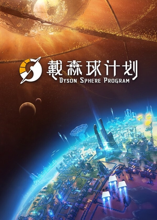
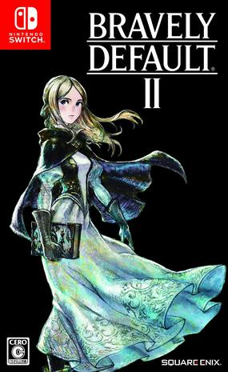
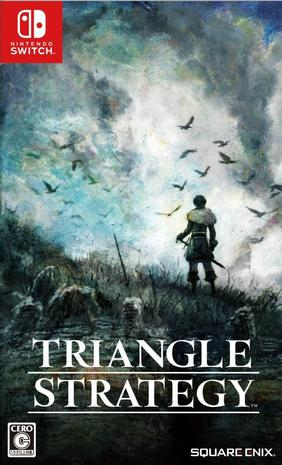
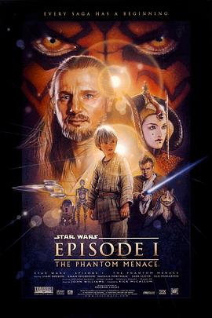

2021年2月 33 条
2021-02-28 10:02:21

2021-02-27 15:17:28
看过 机智牢房生活 / 슬기로운 감빵생활 ★★★★☆
还以为是犯罪片，结果是韩国偶像剧😅😅😅 剧情还行，就是太长了。。。耐飞2倍速看完。颇有Angel beats的感觉，也有棒球要素，可以说是很匹配了。搞笑要素也还好，但是平铺直叙的内容有点多，中间无数次想放弃，但是又有点想看结局。。。
2021-02-26 10:57:42

2021-02-26 07:13:49
2021-02-24 23:24:08
分数能这么高？！
2021-02-24 19:25:18
分数能这么高？！
2021-02-24 15:34:24
想看烂片之王的电影
2021-02-21 11:48:41
想看 鬼灭之刃 / 鬼滅の刃
2021-02-20 20:11:50
玩过 寂静之人 THE QUIET MAN ★★☆☆☆
二周目通关，一周目听障人士的体验可以说是刻骨铭心了，体验极其糟糕，游戏如果没有声音真的是太糟糕了。。。一周目各种疯狂读口型，仍然理解错了剧情，二周目《The Loud Man》解答了所有疑问，也是够狗血的。剧情一般吧，片尾曲还不错。有种寒蝉鸣泣之时解的感觉，但是剧情又得完全一样，真的太麻烦了，而且不能在章节中途保存，简直反人类。。。二周目最后一章片尾遇到bug没声音就得重新打一遍最后一章。二周目通关后保持我的2星不推荐。我觉得直接用有声音的版本就够了，何必折磨玩家3小时无声一周目？
2021-02-20 20:10:07
上传了17张照片到 寂静之人 THE QUIET MAN 的 相册
2021-02-20 10:15:44
在玩 寂静之人 THE QUIET MAN ★★☆☆☆
一周目两星，强忍着先通关一周目吧，十分理解聋哑人的痛苦了，操作体验也不咋样
2021-02-19 17:43:15

还以为是octopath traveller 2，简直在搞我
2021-02-17 18:46:22
想看 星球大战前传3：西斯的反击 / Star Wars: Episode III - Revenge of the Sith
2021-02-17 18:45:04
看过 星球大战前传2：克隆人的进攻 / Star Wars: Episode II - Attack of the Clones ★★★★☆
感觉真的是把一部电视剧浓缩成一部电影的感觉，故事特别复杂。战斗还是很爽快的，虽然能看到明显的为了CG留出来的慢动作。最后能看到Master Yoda用light saber也是帅的不行！
2021-02-16 21:43:57
读过 Folding Beijing ★★★★☆
很有意思的反乌托邦短片小说，社会生产力高度发展导致的失业问题，最后导致社会以这种方式分层。
2021-02-16 19:33:02
想看 半泽直树 / 半沢直樹
2021-02-16 18:44:02
想看 哆啦A梦：伴我同行2 / STAND BY ME ドラえもん2
竟然出2了！
2021-02-16 18:42:30
想看 刺杀小说家
2021-02-15 11:12:50
2021-02-14 14:14:43
上传了1张照片到 灵媒 The Medium 的 相册
2021-02-14 14:12:52
很有syberia的感觉，解密游戏但是偶尔要吓我一下。。
2021-02-13 22:50:16
玩过 控制 Control ★★★★★
虽然ps+送了终极版，但是还是继续吹一波xgpu。气氛渲染的是真的棒，没有吓人元素缺让人有点不寒而栗。设定有点像死亡搁浅，主角得去危险的地方跑，而危险的地方是因为有希斯(BT)。但是玩法就很开脑洞了，玩法非常复杂，海景酒店也是迷的不行。谜团还是有很多，不知道她前身到今世之间发生了什么。
2021-02-13 14:16:59

1999年的电影相当棒了
2021-02-13 12:30:09
 看过 唐人街探案3 ★★★★☆
看过 唐人街探案3 ★★★★☆
女主好眼熟，原来是长泽雅美。能感觉到导演确实在压缩时间，但是压得有点狠的感觉，精彩的地方在一半的时候感觉就差不多了。中间出现的人也想不起来了，不过鉴于推理片的选择有限，给个+1星，不知道啥时候出4。结尾烟花那段有点莫名其妙hmm
2021-02-12 20:30:08
悬疑片马克
2021-02-06 19:13:54
玩过 渡神纪 芬尼斯崛起 Immortals Fenyx Rising ★★★★☆
玩了demo，感觉依然是刺客信条的系统，换了个画风再来捞一笔 =。= 这个画风感觉比刺客信条还要低成本。不过打击手感还是很不错的。继续等一个东方信条
2021-02-06 15:09:04
玩了demo，感觉打击感很强
2021-02-02 13:11:03
2021-02-02 13:10:30
2021-02-02 13:09:59
想看 波巴·费特之书 / The Book of Boba Fett
2021-02-02 13:09:35
2021-02-02 13:08:46
看过 曼达洛人 第二季 / The Mandalorian Season 2 ★★★★★
感觉比第一季还精彩啊
2021-02-01 19:57:36
在看 曼达洛人 第二季 / The Mandalorian Season 2 ★★★★★
还是开坑了，第一集斗蛇很精彩